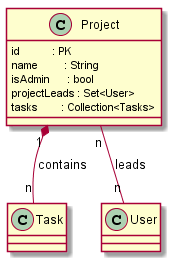

@Entity public class Project extends Object

Task,
User as project lead| Constructor and Description |
|---|
Project() |
| Modifier and Type | Method and Description |
|---|---|
Task |
createTask()
create new
Task below this project. |
void |
dump()
internal logging helper.
|
static void |
dump(Project project)
internal logging helper.
|
long |
getId()
unique id of given project (PK).
|
String |
getName()
display name of this project, length: 2..250.
|
Set<User> |
getProjectLeads()
leads of this projects.
|
Stream<Task> |
getTasks()
all
Tasks belonging to this project. |
boolean |
isEditAllowed(User user)
access check (edit allowed for admin and project leads).
|
void |
setId(long id)
setting the pk, shall not be called directly.
|
void |
setName(String name)
change name of project.
|
void |
setProjectLeads(Set<User> projectLeads)
change leads.
|
String |
toString()
debug.
|
public long getId()
public void setId(long id)
public Set<User> getProjectLeads()
the project lead is a user.,
leads are allowed to administer tasks.public String getName()
public void setName(@NotNull
String name)
public boolean isEditAllowed(User user)
public void dump()
public static void dump(Project project)